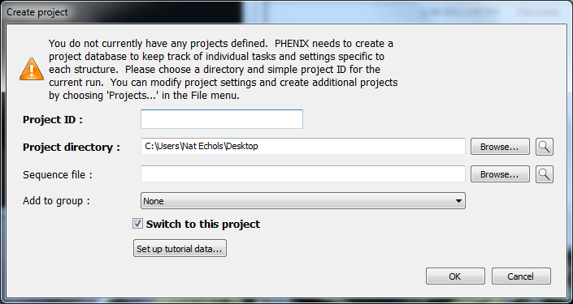
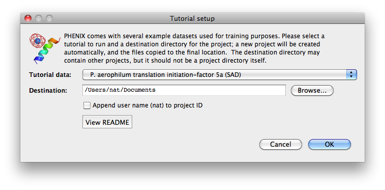

You can find sample data in the directories located in: $PHENIX/examples. Additionally there is sample MR data in $PHENIX/phaser/tutorial. The PHENIX GUI provides the ability to automatically set up any of the tutorial datasets. When the GUI is started for the first time, a dialog window will appear asking you to create a project:

Click the button "Set up tutorial data" to select a tutorial. A new window will appear with a drop-down menu listing all of the tutorial datasets grouped by category (Experimental phasing, Molecular replacement, etc.). By default the necessary files will be copied to a new directory in your Documents folder (if present, otherwise the home directory will be used), but you may use any destination you wish.

A README file is available for some projects; this contains important information such as the wavelengths and anomalous scattering coefficients (f' and f'') for MAD datasets.
You can run sample data from the command line with a Wizard with a simple command. To run p9-sad sample data with the AutoSol wizard, you type:
phenix.run_example p9-sad
This command copies the $PHENIX/examples/p9-sad directory to your working directory and executes the commands in the file run.sh. Documentation for running tutorials in the GUI is currently in preparation.
You can see which sample data are set up to run automatically by typing:
phenix.run_example --help
This command lists all the directories in $PHENIX/examples/ that have a command file run.sh ready to use. For example:
phenix.run_example --help PHENIX run_example script. Fri Jul 6 12:07:08 MDT 2007 Use: phenix.run_example example_name [--all] [--overwrite] Data will be copied from PHENIX examples into subdirectories of this working directory If --all is set then all examples will be run (takes a long time!) If --overwrite is set then the script will overwrite subdirectories List of available examples: 1J4R-ligand a2u-globulin-mr gene-5-mad p9-build p9-sad
The PHENIX tutorials listed on the main PHENIX web page will walk you through sample datasets, telling you what to look for in the output files. For example, the Tutorial 1: Solving a structure using SAD data tutorial uses the p9-sad dataset as example. It tells you how to run this example data in AutoSol and how to interpret the results.